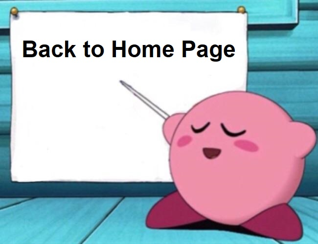

Hey Gorgeous, did you know I actually only see you? Thanks to that, I've noticed alot of things about you. Things that would go unnoticed by many, but I see them. I see how you are so disturbing selfless. I have never seen a person that puts their friends over themselves in basically all situations. They write songs about catching grenades for others but I have no doubt in my mind that you would not hesitate to do so yourself. To witness such a caring and loving person in all their shapes and forms, I've only fallen further and further for you and everything associated with you. Your ability to be passionate and act on those passions is something I envy and aspire to be like one day. Your obsession of Matcha, Kirby and One Piece is honestly so fucking cute but also how you just go get them whenever you wish is something I kinda wish I had. I like stuff like juice, deserts and tech but obviously some of them I should indulge in so often. Those things I only get it sometimes because I'm so lazy. Seeing you up and about doings things like sports and keeping constant use of your calender makes me jealous yet I don't do anything to change myself. However, in the upcoming year, I intend to change these aspects of my life and want to improve my life to keep up with your life style. I need to stop sleeping so much and keep consistent habits to help me do the things I want to do and the things I need to do. I want to gym more often, I want to see you more often, I want to study more often (even though I'm actually doing quite alot), I want to be able to hang with my friends more often. All of these things I wish to do and the only thing I lack is discipline and inititive. But most of all, I need motivation because even if I start these activities/tasks, I burn out and lose interest over time. That's where you come in and make me remember that everything I do is for you. I admire your attributes as a person and want to become a person that you can be proud to call your lifelong partner. I know that I don't have to do these things to be that person in your life but I don't think I could face myself, where you as a person is constantly improving and making changes to your life to compliment your desires to fulfil needs and wants, and I'm over here doing nothing new and remaining stagnant. Thank you for being not only my role model but also my biggest support. I love you so fucking much that words cannot get even close to represent how much you mean to me.
